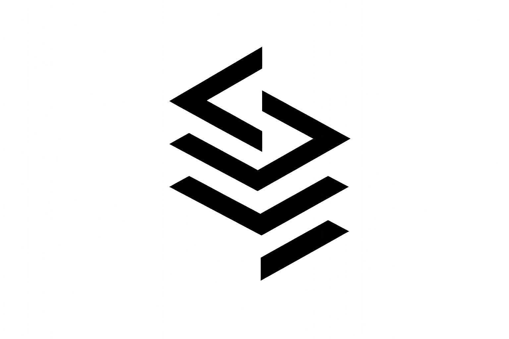

Dolor
Equipos con prototipos que no escalan, sin seguridad ni automatización.
Software · IA · Ciberseguridad · Fintech
Arquitectura, desarrollo y hardening para startups, fintech y proyectos académicos que buscan tecnología real, no solo prototipos.
En construcción continua
Actualizado: 29 ene 2026
Propuesta
Equipos con prototipos que no escalan, sin seguridad ni automatización.
Arquitecturas claras, APIs seguras, CI/CD y observabilidad ligera desde el día uno.
Tiempo de salida a producción menor y menos riesgo operativo.
Casos de estudio
Soluciones reales con enfoque de negocio, arquitectura y seguridad.
Fintech · Seguridad
Problema: microfinanzas sin scoring confiable. Solución: plataforma bancaria con scoring inteligente y seguridad por capas. Resultado: base lista para pilotos fintech.

Ecosistema empresarial
Problema: proyectos dispersos sin capa común. Solución: ecosistema API-first, modular y observable. Resultado: unificación de servicios y rapidez en iterar.

Académico · Patrones
Problema: prácticas aisladas sin estándares. Solución: portafolio académico con patrones y APIs documentadas. Resultado: base demostrable para roles técnicos.
Lab personal
Problema: necesidad de probar ideas rápido. Solución: laboratorio con APIs, DevOps e IA. Resultado: pruebas de concepto medibles y transferibles.
Qué hacemos
Oferta clara para clientes, reclutadores o socios.
Plataformas escalables y seguras listas para crecimiento académico o empresarial.
Protección de APIs, autenticación, cifrado y auditoría.
Automatización, scoring y toma de decisiones con modelos integrados.
Aplicaciones web y backend con despliegue real y CI/CD.
Quién soy
Founder & CTO | Digital Ecosystems, AI-Driven Platforms & Systems Architecture
Construyo ecosistemas tecnológicos, plataformas digitales y arquitecturas orientadas a impacto real, escalabilidad y automatización.
Estudiante de Desarrollo de Software en ITLA · GPA 4.0 (último término 3.9). Integro backend moderno, APIs, cloud, IA y seguridad como base.
Validación
“Destaca por su capacidad de estructurar sistemas complejos y llevarlos a producción con enfoque profesional.”
Profesor ITLA
“Entrega prototipos con seguridad integrada y documentación lista para equipos.”
Colaborador · Proyecto académico
Artículos / Lab
JWT, Zero Trust y hardening práctico para APIs públicas.
2026Dominios, contratos y observabilidad desde el día cero.
2026Pipelines pequeños que no frenan la entrega.
2026Logros
FAQ
Consultoría tecnológica, APIs, fintech, automatización, IA aplicada y revisiones de seguridad.
Llamada breve, alcance y entregables claros, plan de una página con tiempos.
Sí, horario flexible US/EU; comunicación en español o inglés.